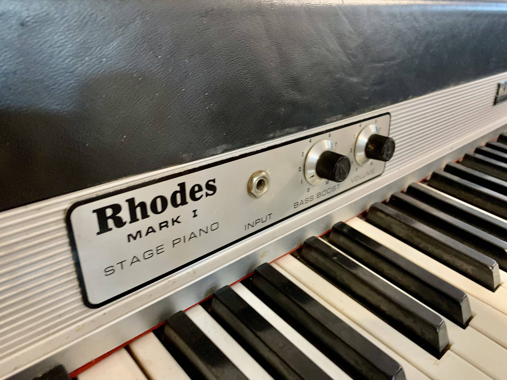

The Moog company pioneered the commercial manufacture of modular voltage-controlled analog synthesizer systems in the early 1950s.
| Photo | Description | Price |
|---|---|---|
|  | The Rhodes piano is an electro-mechanical piano, invented by Harold Rhodes during the fifties and later manufactured in a number of models ... | $1400 |
| The Rhodes piano is an electro-mechanical piano, invented by Harold Rhodes during the fifties and later manufactured in a number of models ... | $1400 | |
| The Rhodes piano is an electro-mechanical piano, invented by Harold Rhodes during the fifties and later manufactured in a number of models ... | $1400 |
The Fender Stratocaster or "Strat" is one of the most popular electric guitars of all time, and its design has been copied by many guitar makers. It was designed by Leo...
The Gibson Les Paul is a solid body electric guitar that was first sold in 1952. The Les Paul was designed by Ted McCarty...